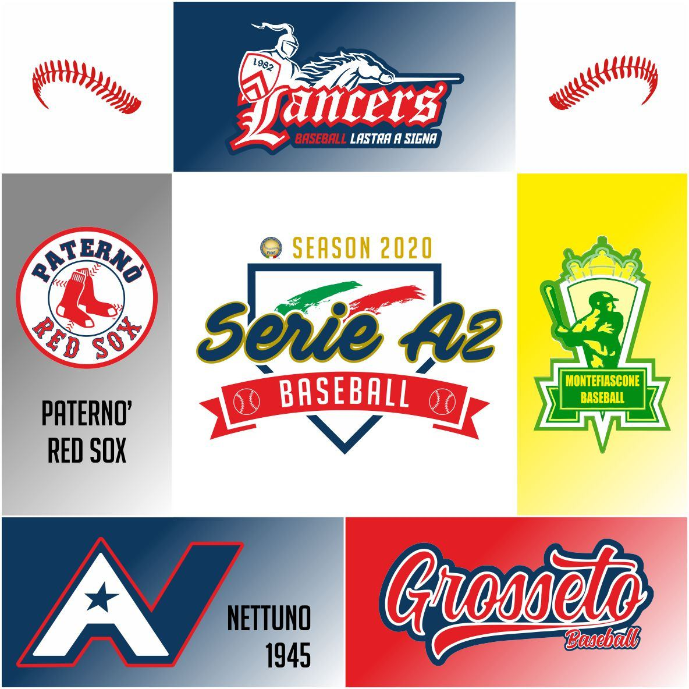
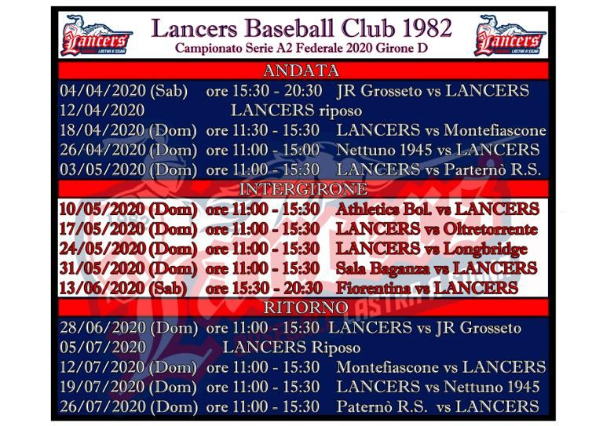

Nelle scorse settimane la FIBS ha ufficializzato i gironi ed i calendari della prossima Serie A2 che partirà nel fine settimana del 4-5 Aprile per terminare il 25-26 Luglio.
La formula 2020 consiste in 4 gironi come nella stagione precedente, in questo caso saranno tre da 5 squadre ed uno da 6.
Nel mese di Settembre sono previsti i play-off per i due posti disponibili nella Serie A1 2021 ed i playout.
Questi i gironi:
GIRONE A
Cagliari – Bollate – Senago Milano – CUS Brescia – BC Settimo
GIRONE B
Sultan Cervignano – Tecnovap Verona – Comcor Modena – New Black Panthers – Metalco Dragons – Bolzano
GIRONE C
Bologna Athletics – Fiorentina Firenze Violasupersport – Salumifici Fontana Ermes Sala Baganza – Longbridge 2000 – Ciemme Oltretorrente
GIRONE D
CSO PANAMED LANCERS – Nettuno 1945 – Jolly Roger Grosseto – Paternò Red Sox – Wiplanet Montefiascone
La formula prevede Andata, Ritorno ed Intergirone (nel nostro caso con il Girone C) per un totale di 26 partite (16 tra A/R e 10 di intergirone).
La squadra lastrigiana è stata inserita nel girone D; tra le cinque squadre partecipanti solo il Jolly Roger viene dalla Serie A2 2019 mentre Nettuno, Paternò e Montefiascone sono state ripescate dalle categorie inferiori.
Il salto di categoria sarà sicuramente l’ostacolo maggiore che i Lancieri affronteranno; a questo si aggiunge un girone sicuramente ostico dal punto di vista tecnico e organizzativo per via delle lunghe trasferte.
Analizzando le nostre avversarie si può prevedere che il Jolly Roger Grosseto apparirà come una formazione rinnovata rispetto al 2019 partendo dalla guida tecnica affidata all’ex nazionale Jairo Ramos Gizzi (una breve apparizione anche con il JR), qualche veterano ha dato l’addio al baseball giocato ed altri giocatori sembrano accasati in categorie meno impegnative.
Qualche giovane prospetto verrà prelevato dalle squadre limitrofe, come ad esempio i Red Jack che la stagione scorsa hanno partecipato alla Serie B nello stesso girone dei Lancers.
Conosciamo bene la compagine del Montefiascone, affrontata in sette occasioni nel 2019 tra stagione regolare e playoff; una squadra sicuramente difficile da battere che darà filo da torcere alle altre partecipanti grazie anche a qualche innesto che ben conosce la categoria.
I risultati hanno determinato 2 vittorie 2 sconfitte per ciascun team in campionato ed un secco 3-0 a favore dei bianco-blu nella finale playoff che ha decretato la promozione dei Toscani.
Il Nettuno, proveniente dalla Serie C, ha annunciato nomi pesanti richiamando a se i propri tesserati sparsi nelle formazioni di Serie A1, alcuni di loro vestono anche i colori della nazionale.
La squadra che scenderà in campo potrebbe militare senza problema nella massima serie e non avrà difficoltà a raggiungere i playoff; questo è più uno stimolo che un timore per i ragazzi di Barbieri che non aspettano altro che misurarsi con un livello più elevato.
Il Paternò è sicuramente la squadra più difficile da decifrare, ripescata anch’essa dalla Serie C dopo aver ceduto ai playoff per il passaggio in B; nel recente passato ha militato più volte nella categoria cadetta vincendo anche il campionato nella stagione 2016.
Si preannuncia un anno molto interessante e avvincente che metterà a dura prova la squadra sotto il profilo tecnico e fisico; per questo motivo prosegue senza sosta, nonostante le condizioni climatiche sfavorevoli, la preparazione dei Lancieri.
Nel mese di Marzo inizieranno anche le prime amichevoli che serviranno ai giocatori per togliere un po’ di “ruggine” da guantoni e mazze e allo staff tecnico per capire le condizioni del proprio team.
Di seguito il calendario provvisorio, non si escludono modifiche in termini di giorni/orari.
